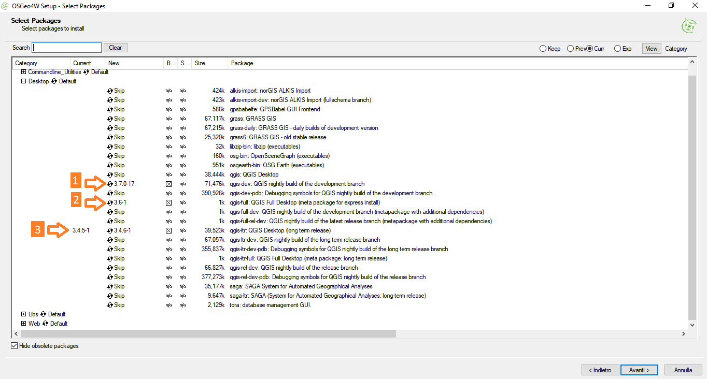

STRUMENTI GIS OPEN SOURCE - LIVELLO BASE
Luca Lanteri lklanteri@gmail.com
Rocco Pispico r.pispico@gmail.com
Aprile 2019

Obiettivi del corso
- Fornire elementi di conoscenza per l’utilizzo del software GIS Open Source QGIS
- I software GIS: quali sono, principali funzionalità, tipi di licenza, modalità di installazione
- Gestire dati esistenti nei formati vector, raster e i formati OGC
- Creazione di nuovi dati territoriali “da zero” o a partire da dati esistenti
- Analisi GIS
- Semplici personalizzazioni
- Utilizzo di geodatabase
Tutto questo in pochissimo tempo.
Argomenti trattati
GIS
- una definizione
- software GIS
- GIS desktop
- WEBGIS
- licenze d'uso
Installazione QGIS
- installazione di QGIS
- installazione di QGIS su Windows
QGIS 3
- nuova interfaccia utente
GIS una definizione
- Burrough, 1986: “a powerful set of tools for collecting, storing, retrieving at will, transforming and displaying spatial data from the real world”
- Aronoff, 1989: “any manual or computer based set of procedures used to store and manipulate geographically referenced data”
- Cowen, 1988: “a decision support system involving the integration of spatially referenced data in a problem solving environment”
- Carter, 1989: “an institutional entity, reflecting an organisational structure that integrates technology with a database, expertise and continuing financial support over time”
- Cortellessa, 1995: “Un insieme organizzato di hardware, software e persone finalizzato alla acquisizione, gestione, analisi, e visualizzazione di informazioni alfanumeriche e grafiche riferite ad un determinato territorio”
Software GIS
I software di accesso e gestione dei dati GIS possono dividersi in due categorie:
- i software desktop che necessitano molto spesso di una installazione sul proprio computer
- i software su web (webgis) che possono essere utilizzati avendo a disposizione un browser internet o solo qualche semplice plug-in.
I primi sono in genere più ricchi di funzionalità e leggermente più veloci i secondi hanno il vantaggio che possono essere utilizzati ovunque a patto di avere una connessione.
Di qualunque tipo siano gli strumenti per la visualizzazione e trattamento di dati territoriali, possono differire nelle modalità di interazione con l’interfaccia utente, ma le principali funzioni di:
- caricamento dati
- navigazione nella mappa
- ricerca semplice o complessa
- funzionalità di legenda (accendere e spegnere temi, variare la tematizzazione)
sono sempre presenti.
GIS desktop
ESRI ArcGIS

Blue Marble Global Mapper

SAGA GIS
GRASS
QGIS

WEBGIS
Geoportale Regione Piemonte Geoportale Regione Piemonte
Geoportale Arpa Piemonte Geoportale Arpa Piemonte
Geoportale ISPRA Geoportale ISPRA
Geoportale RNDT Geoportale RNDT (Portale RNDT)
Geoportale INSPIRE Geoportale INSPIRE (Portale INSPIRE)
INSPIRE Data Sets - EU & EFTA Country overview
| Nazione | numero dataset | downloadable | visibili |
|---|---|---|---|
| Austria | 547 | 385 | 342 |
| Belgium | 484 | 52 | 289 |
| Bulgaria | 29 | 0 | 0 |
| Croatia | 123 | 3 | 5 |
| Cyprus | 42 | 27 | 0 |
| Czech Republic | 150 | 14 | 91 |
| Denmark | 197 | 22 | 24 |
| Estonia | 73 | 13 | 21 |
| Finland | 583 | 34 | 48 |
| France | 38771 | 683 | 10804 |
| Germany | 29978 | 10090 | 10478 |
| Greece | 57 | 0 | 57 |
| Hungary | 109 | 1 | 1 |
| Iceland | 146 | 7 | 0 |
| Ireland | 54 | 4 | 0 |
| Italy | 20184 | 0 | 368 |
| Latvia | 135 | 2 | 4 |
| Liechtenstein | 59 | 9 | 11 |
| Lithuania | 60 | 9 | 10 |
| Luxembourg | 215 | 209 | 164 |
| Malta | 157 | 128 | 151 |
| Netherlands | 199 | 95 | 122 |
| Norway | 277 | 15 | 8 |
| Poland | 31830 | 61 | 15 |
| Portugal | 654 | 138 | 281 |
| Romania | 113 | 23 | 27 |
| Slovakia | 230 | 3 | 10 |
| Slovenia | 95 | 6 | 8 |
| Spain | 216 | 134 | 138 |
| Sweden | 192 | 15 | 54 |
| Switzerland | 208 | 2 | 0 |
| United Kingdom | 20776 | 62 | 174 |
Licenze d'uso
Le licenze d'uso dei software in generale sono:
- software proprietario: si deve possedere una licenza d'utilizzo del software, sia esso installato sul proprio computer o di utilizzo in remoto
- freeware: software proprietario il cui utilizzo è rilasciato in forma gratuita
- libero e open source: è possibile utilizzare liberamente il software, è possibile studiarlo (si dispone del codice sorgente), possibilità di ridistribuire il software e possibilità di modificarlo.
QGIS è rilasciato con licenza GPL (General Public License) che permette all’utente libertà di utilizzo, copia, modifica e distribuzione. La licenza GPL ha incontrato un gran successo fra gli autori di software sin dalla sua creazione, ed è oggi la più diffusa licenza per il software libero.
Installazione di QGIS
Il sito ufficiale dove trovare QGIS è QGIS.org
Elenco delle versioni realizzate QGIS splash screen
Dal sito è possibile scaricare le versioni:
- LTR (Long Term Release) è la versione stabile del software - attualmente QGIS 3.4.6 'Madeira' - viene garantita la risoluzione di bug ma non ci sono nuove funzionalità
- ultima versione (LR) è una versione che offre nuove funzionalità - attualmente QGIS 3.6.1 'Noosa' - aggiornata indicativamente ogni 4 mesi
- versione notturna è la versione in continuo aggiornamento e manutenzione, attualmente è la 3.7.x
QGIS è disponibile per differenti sistemi operativi: Windows 32 e 64 bit, MacOS X, Linux e Android
In questi giorni è uscita la prima versione ufficiale di QField 1.0
Dal sito è possibile accedere a molte pagine di documentazione e aggiornamenti sul progetto
- manualistica
- mailing list
- news
- supporto economico
Programmazione [prossime versioni] (https://www.qgis.org/it/site/getinvolved/development/roadmap.html#release-schedule)
Installazione di QGIS su Windows
Ci sono differenti modalità di installazione di QGIS.
L’installazione delle versioni stand alone prevedono le consuete modalità di installazione dei programmi Windows. Durante l’installazione vengono richieste poche indicazioni: il path d’installazione e poche altre richieste e premere next.
Esiste un’altra modalità di installazione (OSGEO4W), leggermente più complicata, ma che in buona parte dei casi permette l’installazione senza dover essere necessariamente amministratori del proprio PC.
Indicare la cartella di installazione
Indicare la cartella dove saranno messi i pacchetti
ATTENZIONE: indicare il proxy dove necessario
Indicare da quale repository scaricare QGIS
Possibili installazioni
- Nightly build - versione di sviluppo
- LR - ultima versione disponibile
- LTR - ultima versione stabile

QGIS 3
Barra degli strumenti
Barra degli strumenti di QGIS 2
Barra degli strumenti di QGIS 3
Tasti rapidi
Possibilità di personalizzare e configurare sequenze di tasti per effettuaer specifiche funzionalità
Simbologia
Possibilità di personalizzare la simbologia
Interfaccia
Possibilità di personalizzare l'interfaccia attraverso la mascheratura di specifiche funzioni
Profili
Possibilità di creare profili utente. Ogni profilo utente permette di creare un ambiente specifico con tutte le personalizzazioni precedenti: simboli, tasti rapidi, interfaccia ecc...
Barra di stato
Barra di stato QGIS 2
Alla barra di stato QGIS 3 è stato aggiunto lo strumento di ricerca che permette di esplorare tra:
- strumenti
- layer
- funzionalità
Inoltre permette la ricerca di valori all’interno di uno o più layer presenti nel progetto
Data Source Manager
- Data Source Manager
- Nuovo layer GeoPackage
- Nuovo layer Shapefile
- Nuovo layer SpatiaLite
- Nuovo layer virtuale
il Data Source Manager permette di caricare nel progetto i layer desiderati di molti formati
Formati gestiti
- Browser: permette di navigare tra le risorse del pc e scegliere i dati da caricare
- Vector: apre lo strumento di navigazione per i dati vettoriali. Formati vettoriali gestiti
- Raster: apre lo strumento di navigazione per i dati raster. Formati raster gestiti
- Mesh
- Testo delimitato: CSV
- Geopackage
- SpatiaLite
- PostgreSQL e PostGIS
- MySQL
- Oracle
- DB2
- Virtual Layer
- WMS/WMST: immagini raster (standard OGC) generate da un server di cui conosciamo i parametri di connessione
- WCS: coperture raster (standard OGC) generate da un server di cui conosciamo i parametri di connessione
- WFS: layer vettoriali (standard OGC) generati da un server di cui conosciamo i parametri di connessione
- ArcGIS Map Server: immagini raster (standard ESRI) generate da un server di cui conosciamo i parametri di connessione
- ArcGIS Feature Server: layer vettoriali (standard ESRI) generate da un server di cui conosciamo i parametri di connessione
- Geonode: immagini raster (standard Geonode) generate da un server di cui conosciamo i parametri di connessione
La gestione dei molti formati raster e vettoriali utilizzati da QGIS e da molti software GIS proprietari sono legati ad un set di librerie open source
Caricare i dati in QGIS
Ci sono molte modalità per caricare i dati in QGIS
- Drag&Drop da gestione risorse o dal Data Source Manager
- tasto destro dal Browser nel Data Source Manager
- dal menu Layer->Aggiungi layer
Interfaccia di QGIS
La barra del menù fornisce accesso alle varie funzioni di QGIS utilizzando un menù a tendina

La barra degli strumenti fornisce l'accesso alla maggior parte delle funzioni, più le funzioni supplementari per l'interazione con la mappa. Ogni elemento della barra degli strumenti ha una guida nel popup relativo.

Tenete il mouse sopra l'elemento e verrà visualizzata una breve descrizione della sua funzionalità. Ogni barra può essere posizionata a piacimento. Inoltre ogni barra può essere eliminata e reinserita, cliccando con il tasto destro del mouse e selezionando la voce corrispondente sul menù a tendina che si aprirà.
- L'area della legenda è usata per regolare la visibilità e la disposizione degli strati o layer, uno strato posto in alto copre quelli posti sotto di lui. Il quadratino accanto al nome di ogni strato nella legenda serve per mostrare/nascondere lo strato. Ulteriori funzionalità per il layer sono attivabili con il tasto destro, le funzionalità variano tra dati vettoriali e raster
- Questa è l'area in cui le mappe vengono visualizzate. La mappa che appare in questa finestra è il risultato della sovrapposizione degli strati vettoriali e raster impostati in legenda. La vista nell'area di mappa e la legenda sono strettamente legate l'una all'altra - le mappe che vengono visualizzate riflettono i cambiamenti effettuati nella legenda
- All'interno della panoramica c'è un rettangolo che mostra l'estensione corrente della mappa. Ciò permette di determinare rapidamente quale area della mappa si sta osservando. E' possibile aggiungere uno o più livelli alla mappa panoramica utilizzando il tasto destro del mouse. Spostando con il mouse il rettangolo rosso che mostra l’estensione di visualizzazione attuale, la mappa visualizzata si modifica di conseguenza

Toolbar dei file
- Nuovo progetto
- Apri progetto esistente
- Salva progetto
- Print composer
- Gestore delle stampe
- Gestore degli stili

Toolbar di navigazione
- Pan: sposta la mappa senza cambiare la scala
- Centra la selezione senza cambiare la scala
- Zoom in
- Zoom out
- Zoom alla risoluzione massima
- Zoom su tutti i layer
- zoom agli elementi selezionati
- zoom al layer
- zoom precedente
- zoom successivo
- crea una nuova mappa
- nuovo bookmark
- lista dei bookmark
- aggiorna la visualizzazione

Toolbar di interrogazione
- interroga i dati
- azioni configurate
- seleziona gli elementi geometrici
- ricerca per selezione
- rimuove la selezione
- apertura della tabella dei dati associati
- calcolatore dei valori
- strumenti di processing
- statistiche sul layer
- strumenti di misurazione: lunghezze, superfici e angoli
- map tips
- strumenti delle annotazioni

Toolbar menu
Alcuni tool permettono modalità di funzionamento differenti a parità di funzione di base

Pannelli e toolbar
Dal menu visualizza è possibile impostare la visualizzazione di pannelli e di barre degli strumenti aggiuntivi

Legenda
Dal dialogo della legenda possono essere condotte molte operazioni. Le più semplici ed intuitive sono: impostare la visibilità e l’ordine di disegno dei layer.
L’ordine di disegno dei layer nella mappa avviene partendo dal basso verso l’alto
- layer spento non visualizzato
- layer acceso e visualizzato
- è possibile operare la visualizzazione/non visualizzazione anche sulle singole classi di legenda del layer

- apre il dialogo di personalizzazione della legenda
- crea un gruppo
- accende e spegne layer e gruppi, configura e gestisce le viste
- filtra la legenda in base agli elementi effettivamente presenti in carta
- opzioni di filtro sui tasselli della legenda
- Rende visibili (espande) tutti i gruppi/legende dei layer
- Nasconde (racchiude) tutti i gruppi/legende dei layer
- Elimina un layer o un gruppo dalla TOC

Menu su tasto destro del mouse
Premendo il tasto destro del mouse è possibile attivare un menu con molte funzionalità

Proprietà del progetto
Dal menu progetto è possibile impostare molte proprietà


Sistema di riferimento
E' importante impostare il sistema di riferimento spaziale corretto. In Regione Piemonte il sistema di riferimento è il: 32632 UTM - WGS 84 metriche fuso 32.

Esercizio 1 - proprietà del progetto
Eseguire QGIS.
Nella menu bar cercare progetto->proprietà del progetto.
Esplorate quanti sistemi di riferimento e proiezioni sono disponibili.
Date un titolo al progetto
Impostate un colore di sfondo della vostra vista
Nella menu bar cercate impostazioni->opzioni e controllate le impostazioni della lingua di riferimento.
Impostate come CRS di riferimento il 32632
Salvate il progetto e chiudete QGIS.
Aprite il progetto salvato.
Ha mantenuto le impostazioni precedenti?
Dati gestiti

Dati vettoriali
Per dati vettoriali si intendono dati geometrici memorizzati attraverso le coordinate dei punti significativi degli elementi.
Ogni posizione viene memorizzata attraverso una semplice coppia di coordinate xy.

I punti vengono memorizzati come una singola coppia di coordinate, le linee come una serie ordinata di coppie xy, i poligoni come serie di coppie xy dove la prima e l’ultima coppia di coordinate coincidono
Oltre agli elementi geometrici semplici: punti, linee, spezzate e poligoni vengono gestiti elementi complessi definiti multipart.
Ad un oggetto (feature) multipart è assegnato un solo record di dati descrittivi associati.

Il formato shapefile
In QGIS possono essere utilizzati molti formati di dati vettoriali. In generale sono gestiti tutti quei formati che fanno riferimento alle librerie software GDAL
Arc/Info Binary Coverage Comma Separated Value (.csv) DODS/OPeNDAP ESRI Personal GeoDatabase ESRI ArcSDE ESRI Shapefile FMEObjects Gateway GeoJSON Geoconcept Export GeoRSS GML GMT GPX GRASS Vector
Informix DataBlade INTERLIS IHO S-57 (ENC) Mapinfo File Microstation DGN OGDI Vectors ODBC Oracle Spatial PostgreSQL2 SDTS SQLite UK .NTF U.S. Census TIGER/Line VRT - Virtual Datasource
Il formato più usato è molto probabilmente lo Shapefile che diversamente da quanto accade per altri formati di file (word o excel per esempio), dove è sufficiente un solo file per contenere le informazioni, per il formato shapefile le informazioni sono suddivise in molti file differenti.
.DBF: contiene i dati associati .PRJ: contiene il sistema riferimento geografico .SBN: file di indice .SBX: file di indice .SHP: contiene le geometrie .SHP.XML: contiene la metadocumentazione .SHX: indice delle geometrie
In grassetto i file NECESSARI per lo scambio di dati
Esercizio 2 - Caricare i dati
- Eseguire QGIS.
- Esplorate la cartella dei dati di esempio in [disco_comune]\dati\Esercizi\es_2\
Quanti shapefile sono presenti? Quali topologie? Qual è lo shapefile con il maggior numero di geometrie? - caricate nella vista il layer comuni2019.gpkg
- Caricate nella vista i layer: anagrafica_stazioni_idroweb.geojson
- Caricate nella vista il layer zoneallerta.gpkg
- Aggiungete un layer alla panoramica.
- Navigate nella mappa attraverso la overview map.
- Create il gruppo TEST ed inserite alcuni layer al suo interno
- Salvate il progetto
Domanda: quale formato di progetto utilizzare?
- Caricate nella vista il layer altridati.gpkg
Domanda: cosa accade?
Rappresentare i dati vettoriali
La presentazione dei dati è una parte fondamentale dei dati e delle analisi su di essi compiuti.
I risultati possono essere mappe, report, tabelle, grafici. Queste rappresentazioni possono essere inserite in pubblicazioni, diventare cartografie vere e proprie ma anche pubblicate in forma digitale sul web.
La pubblicazione permette la comparazione dei differenti metodi di analisi o quali metodi sono migliori o rappresentano i dati in maniera più accurata
Vestire (allestire, tematizzare) i dati è una delle principali funzioni di uno software GIS. Nell’utilizzo dei GIS risulta spontaneo associare dei colori ai differenti strati informativi per differenziarli tra loro o per far risaltare una tematica di interesse.
Operare queste scelte è una prima forma di analisi spaziale. Cambiare simboli e colori delle geometrie, aggiungere etichette permettono di facilitare la lettura dei dati geografici, agevolano la comunicazione delle informazioni agli utenti, chiariscono particolari situazioni.
Proprietà dei layer vettoriali
Per impostare uno stile di rappresentazione di un layer vettoriale premere il tasto destro del mouse sul layer interessato e scegliere proprietà.
Informazioni sul layer

Sorgente dei dati e sistema di coordinate di riferimento

Stile di rappresentazione

Rappresentazione a valore singolo
Tutte le geometrie avranno la stessa rappresentazione

Rappresentazione categorizzata
Ad ogni singolo valore del campo selezionato verrà assegnato un simbolo differente.

Rappresentazione graduata
Le geometrie saranno tematizzate attraverso una scala di valori.
La classificazione è possibile solo per i campi che contengono valori numerici.

Rappresentazione con regole
Le geometrie saranno tematizzate attraverso una serie di regole.
Questa rappresentazione un po' più complessa permette grandi possibilità di allestimento in funzione della scala degli elementi geometrici.

Rappresentazione 2.5D
Permette una visualizzazione di oggetti estrusi in base ad una costante oppure ad un dato associato.


Simbologia per layer puntuali
Per i simboli puntuali sono disponibili gli stessi stili di rappresentazione, inoltre è possibile impostare delle rotazioni e la dimensione per ogni singola geometria in base a quanto specificato in uno o più dati associati.

Simbologia per layer lineari

Simboli SVG
È possibile creare la propria simbologia utilizzando il formato SVG.
Scalable Vector Graphics abbreviato in SVG, indica una tecnologia in grado di visualizzare oggetti di grafica vettoriale e, pertanto, di gestire immagini scalabili dimensionalmente. Più specificamente si tratta di un linguaggio derivato dall'XML, cioè di un'applicazione del metalinguaggio posto a base degli sviluppi del Web da parte del consorzio W3C, che si pone l'obiettivo di descrivere figure bidimensionali statiche e animate
Per creare dei nuovi simboli SVG si possono usare molti software:
- adobe illustrator
- corel draw
- inkscape (open source)
Simboli SVG
In tutte le schermate di impostazioni delle modalità di rappresentazione è possibile salvare o caricare gli stili realizzati.

In QGIS lo stile è composto da più impostazioni e non solo esclusivamente la simbologia.
Le impostazioni possono essere salvate in un file .QML, in un file SLD oppure in un database SpatiaLite, GeoPackage e PostgreSQL.

Esercizio 3 - le rappresentazioni
- Eseguire QGIS.
- caricate qualche dato e sperimentate le varie tipologie di rappresentazione utilizzando i dati associati
- caricate alcuni temi delle differenti tipologie e provate un allestimento
- Operate dei cambiamenti alle etichette.
- salvate gli stili in QML e nel GeoPackage
Standard di interscambio OGC
Anticipando le evoluzioni tecnologiche l’OGC (Open Geostpatial Consortium) ha definito le modalità di interscambio di dati territoriali. Il protocollo WMS (Web Map Service) produce dinamicamente mappe di dati spazialmente riferiti a partire da informazioni geografiche.
Il formato OGC-WMS (Web Map Service) è una delle modalità che è possibile utilizzare e permettono di usufruire di grandi quantità di dati territoriali senza necessariamente doverli scaricare in locale.
Molte amministrazioni pubbliche forniscono già molti servizi webgis in formati OGC.
Configurare un WMS
Per aggiungere un nuovo server WMS è necessaria una piccola configurazione.
Dal Data Source Manager posizionarsi su WMS/WMTS e premere nuovo.

Per creare una nuovo collegamento è necessario dare un nome alla connessione e indicare il path preso dal Geoportale. In alcuni casi potrà essere richiesto di specificare username e password nel caso di servizi WMS riservati.
Una volta stabilita la connessione rimarrà configurata permanentemente.

Esercizio 4 - caricare dati WMS
Eseguire QGIS.
Con un browser andate alla pagina del PCN http://www.pcn.minambiente.it/PCN/ e cercate l’elenco dei servizi WMS disponibili. Cercate nella lista dei servizi la fonte dati dell’ortofoto colore 2006 fuso 32.
Configurate il server WMS: Date un nome alla fonte dati Impostate l’URL di connessione
Aggiungete il layer ortofoto_colore_06_f32 alla vista.
Controllate il sistema di riferimento spaziale
Utilizzate questo dato insieme ad altri precedentemente utilizzati.
Il layer è visibile a tutte le scale di rappresentazione?